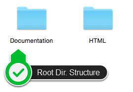
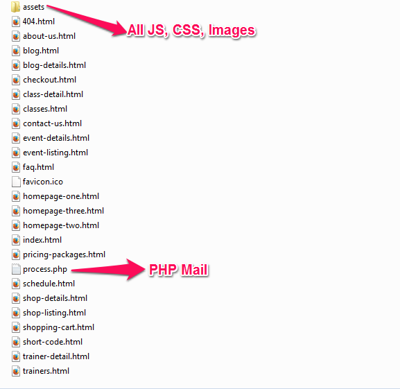
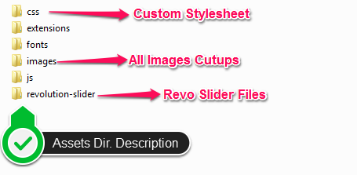
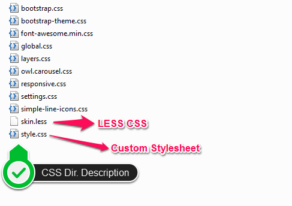
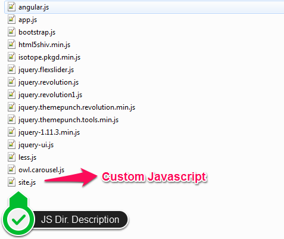
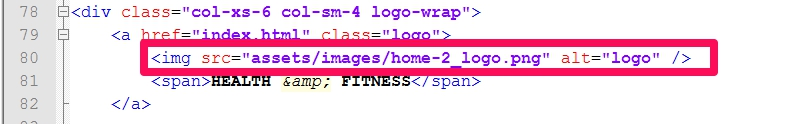

Fit & Fab - Gym and Fitness HTML5 Template is a Bootstrap 3.0 HTML Site Template. Being a Responsive Fluid layout, it’s built on Mobile First Approach which makes it best of all. It is coded in LESS CSS so you get freedom to change its color theme of your choice with just changing a variable in CSS (this is explained below how you can do this). Same is with fonts, it just a matter of changing name and you are done with an updated look ;). JQuery Revolution Slider is one of the advantage you get when you buy this template, it is loaded with effects which gives your homepage header a WoW look to your website visitors. Font Awesome, Retina Images & Google Fonts will let your visitors experiencing high quality website view. Also all the pages are 100% W3C validated & coded SEO friendly where rest assure for caching them into Google & other search engines and gaining better page ranking and best of all features, the pages are optimized for Load Speed and are "A" grade tested on GTmetrix.com. Wait! this is not just all, this template containes ultimate shortcode resource which gives you freedom to create any new page with high interactive features from scratch.
Let us write all the features in bullet, so you can best utilize this template at maximum of its capabilities:
Lets understand the file architecture with the help of screenshots which is a more convincing approach rather explaining in simple text only. The screenshots are well annotated so you can better understand the folders & their behavior correctly.

Pic - root-dir-description.png | This image explains the primary folder structure.

Pic - all-html-files.png | This image explains the primary folder structure where all the HTML files are on root along with the ASSETS folder which is the only directory containing all the JS, CSS, Images & Fonts etc inside.

Pic - assets-directory-description.png | This image explains the ASSETS folder's internal structure. All the sub-directories are described on image with short description.

Pic - all-css-files.png

Pic - all-custom-js.png
This is our effort to make sure you understand the files structure before you navigate to any file. So that it may become easy for you to make any customizations at your end. We want to make your purchase as pleasant as possible to best utilize it for your business. But if still you have any queries or doubts which are beyond the whole documentation and don’t answer all then feel free to email us at support@theemon.com or via our ThemeForest.com user page contact form.
As this template is coded in LESS so it is easy for you to change the glabal colors of skin from single place. You just need to edit the skin.less file placed in "assets/css/" directory. There at the top you can see the code to change skin color. It looks like:
@skinColor:#50b9ce; //Change here your theme Color
You can use this template in 2 layouts.
// Boxed Layout <div id="wrapper" class="boxed"> // Full Width Layout <div id="wrapper">
If you want to use regular navigation then please check the code in site.js.
$('#header').addClass('normal');//Choose Here Class Name (normal or fixed or intelligent);
If you want to use Sticky navigation then please check the code in site.js.
$('#header').addClass('fixed');//Choose Here Class Name (normal or fixed or intelligent);
If you want to use Intelligent Sticky navigation then please check the code in site.js..
$('#header').addClass('intelligent');//Choose Here Class Name (normal or fixed or intelligent);
It's very easy to change your logo. Just take a look at the below screenshot. Change the image link to your own logo.

Contact us form has jQuery form validation & working php mail script. After purchase you need to edit process.php & replace the existing email id, subject with your details.
/**** php code (process.php) ****/ $to = "receiver@example.com"; $from = "info@example.com"; $cc = "cc@example.com"; $subject = "Fit & Fab Template Contact us form";
In the contact section we have added google map. You can change latitude & longitude according to your company address. There are many resources available on internet to get latitude & longitude of any address but for your reference you can use http://www.latlong.net/. Once you have these information then you can edit site.js file & change ther existing one to yours. It looks like:
// Change latitude/longitude var pos = new google.maps.LatLng(23.001452, 72.574112); // Change Address content : '<div id="info">' + '<span class="head">Fit FAB Fitness Studio 31 FAB Street Falkirk </span>' + ' <a href="#" >01324 1234567</a>' + '<a href="#" class="text-mail">info@fitfab.com</a>' + '</div>'
If you need any help. Feel free to contact us anytime. We will reply in 24 hours.
Send a mail from my Themeforest Profile
We've used the images, icons or other files from the following sources as listed below
theem'on is handling all technical support for this Template so in-case you have any questions related to this theme make sure you are redirected to theem'on only. Read below on how to contact theem'on in case you have any query or concerns related to this template.